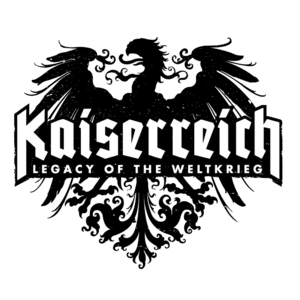
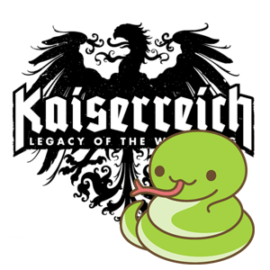
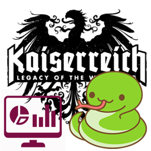

Kaiserreich Development
Kaiserreich is one of the most popular Hearts of Iron IV mods with 800k subscribers. My contributions include coding, bugfixing, testing and reporting bugs
Technologies - Paradox Scripting Language

Kaiserreich Automated Testing
To increase the quality of the mod development, I created a testing framework to perform integration tests of various mod files with more than 60 tests united by common classes and functions
Technologies - Python, Pytest, Object-oriented programming, Jenkins

Kaiserreich Data Generation and Reporting
To get a lot of data for balancing for Kaiserreich, I implemented automated paralleled game running, log collecting, analyzing and reporting the results to Google form via Webdriver
Technologies - Python, Webdriver